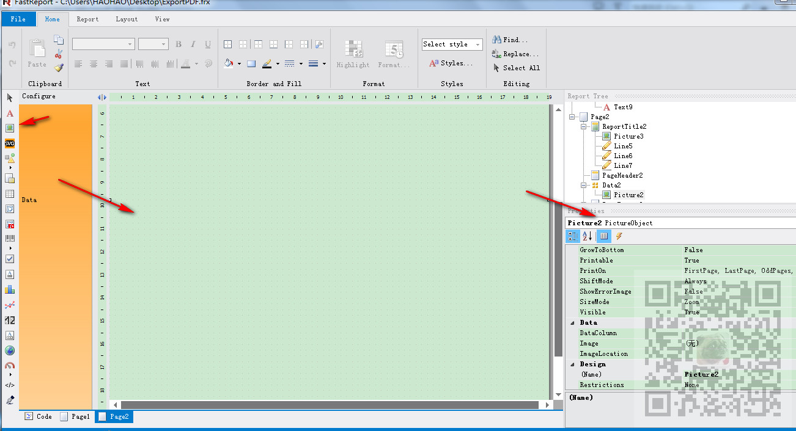

FastReport安装包下载、安装、去除使用限制以及工具箱中添加控件：
https://blog.csdn.net/BADAO_LIUMANG_QIZHI/article/details/100893794
Winform中使用FastReport实现简单的自定义PDF导出：
https://blog.csdn.net/BADAO_LIUMANG_QIZHI/article/details/100920681
参照上面实现使用FastReport导出PDF的实现后，如果要显示照片可以使用
PictureObject控件来显示照片。但是如果在代码中怎样获取当前PictureObject对象并设置
其图片源为Image对象，并且使照片旋转90度。
注:
博客主页：
https://blog.csdn.net/badao_liumang_qizhi
关注公众号
霸道的程序猿
获取编程相关电子书、教程推送与免费下载。
在设计模板时拖拽一个PictureObject

然后在代码中前期加载模板
Report report = new Report();
//获取项目目录
string baseDir = System.Windows.Forms.Application.StartupPath;
//拼接模板文件目录
var reportFile = Path.Combine(baseDir + @"\data\Report", "ExportPDF.frx");
//先清理一下
report.Clear();
//然后加载模板文件
report.Load(reportFile);
然后获取控件对象
var graph = report.FindObject("Picture2") as PictureObject;
获取照片数据源Image对象并旋转90度
//获取图像
System.Drawing.Image image = MainViewContent.mainViewContent.zedGraphControl1.GetImage();
//90度
image.RotateFlip(RotateFlipType.Rotate90FlipNone);
给照片设置照片源
graph.Image = image;